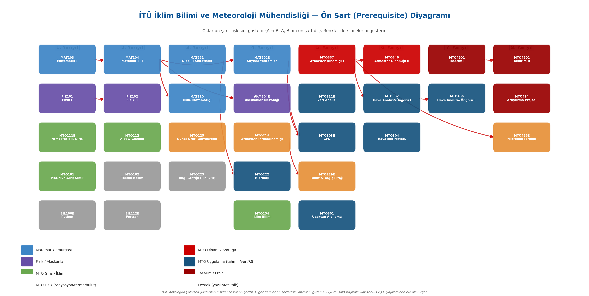
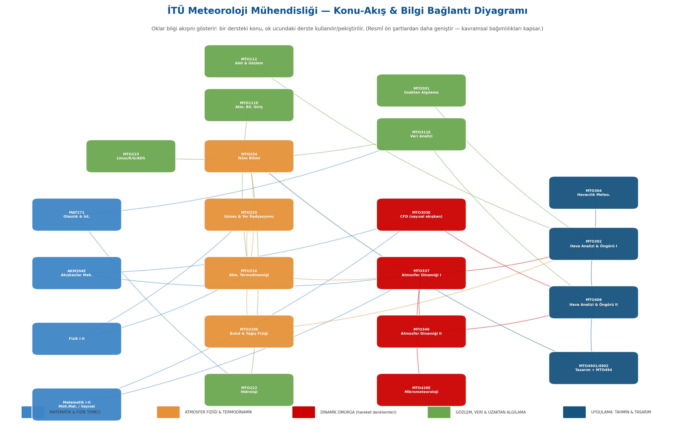

Bu rapor, eşlik eden görsel akış diyagramının metinsel karşılığıdır. Amaç; hangi derslerin birbirini beslediğini, bir ders verilirken öğrencinin ileriki derslere nasıl hazırlanması gerektiğini ve birlikte öğretilebilecek konu kümelerini ders kodları, konu başlıkları ve somut örneklerle ortaya koymaktır.
1. Giriş: Müfredatın 5 Tematik Omurgası
İTÜ Meteoroloji Mühendisliği zorunlu müfredatı, birbirini besleyen beş tematik omurga üzerine kuruludur. Her omurga, alttaki temel derslerden (MAT/FIZ/AKM) başlayıp lisans son sınıfa kadar uzanan bir bilgi zinciri oluşturur.
| # | Omurga | Çekirdek Soru | Ana Dersler |
|---|---|---|---|
| A | Matematik–Fizik Temeli | "Atmosferi tanımlayan denklemleri nasıl kurar ve çözerim?" | MAT103/104, MAT210, MAT271, MAT202, FIZ101/102, AKM204E |
| B | Atmosfer Fiziği & Termodinamik | "Hava neden ısınır, soğur, yoğuşur, yağar?" | MTO214, MTO225, MTO229E, MTO254 |
| C | Atmosfer Dinamiği | "Hava neden ve nasıl hareket eder?" | MTO337, MTO340, MTO303E, MTO426E |
| D | Gözlem & Veri | "Atmosferi nasıl ölçer ve veriyi nasıl işlerim?" | MTO112, MTO301, MTO311E, MTO223, MTO222 |
| E | Uygulama & Tahmin | "Tüm bunları bir hava tahminine nasıl dönüştürürüm?" | MTO302, MTO406, MTO406-NWP, MTO304, MTO4901/4902, MTO494 |
MTO111E Atmosfer Bilimlerine Giriş, beş omurganın da "tohumlandığı" çatı derstir: enerji döngüsü (→B), kuvvetler ve rüzgar (→C), gözlem (→D), hava tahmini (→E) ilk kez burada kavramsal düzeyde tanıtılır.
2. Omurga Zincirleri
Omurga A — Matematik–Fizik Temeli
Ders sırası: MAT103/104 → MAT210 → (MAT271 ‖ MAT202) → FIZ101/102 → AKM204E
| Tohumlanan Konu (Kaynak Ders) | Kullanıldığı Yer (Hedef Ders) | Somut Eşleştirme |
|---|---|---|
| MAT103/104 çok değişkenli türev, vektör analizi | MTO337 toplam türev, küresel koordinat | d/dt = ∂/∂t + V·∇ operatörü MAT104 gradyan/diverjanstan gelir |
| MAT210 ODE/PDE, Fourier, Laplace | MTO303E hiperbolik/parabolik/eliptik PDE; MTO340 dalga denklemleri | PDE sınıflandırması doğrudan MAT210'dan taşınır |
| MAT271 olasılık/istatistik | MTO311E regresyon/zaman serisi; MTO222 birim hidrograf | Dağılımlar ve hipotez testi MTO311E'nin ön koşuludur |
| MAT202 sayısal yöntemler | MTO303E sonlu farklar, Runge-Kutta | RK4 ve ayrıklaştırma şemaları MAT202'de öğrenilir |
| FIZ101 mekanik (Newton yasaları) | MTO337 hareket denklemi, Coriolis/merkezkaç | Atmosferdeki kuvvet dengesi FIZ101 dinamiğinin uzantısıdır |
| FIZ102 elektromanyetizma | MTO225 EM spektrum; MTO301 radyatif transfer | Maxwell/EM dalga kavramı radyasyon derslerinin temelidir |
| AKM204E Bernoulli, süreklilik, momentum, sınır tabaka | MTO337 süreklilik denklemi; MTO303E korunum denklemleri; MTO426E sınır tabaka | Süreklilik denklemi AKM204E'den MTO337'ye birebir taşınır |
Omurga B — Atmosfer Fiziği & Termodinamik
Ders sırası: MTO214 → (MTO225 ‖ MTO229E) → MTO254
| Tohumlanan Konu | Kullanıldığı Yer | Somut Eşleştirme |
|---|---|---|
| MTO214 düşey kararlılık, kuru/nemli adyabat | MTO302 termodinamik diyagram/şiddetli hava | Skew-T kararsızlığı → CAPE/CIN ve konvektif fırtına potansiyeli |
| MTO214 Skew-T diyagramları, atmosfer statiği | MTO337 statik kararlılık, hidrostatik denklem | Statik kararlılık parametresi (σ) MTO214'ten MTO340 omega denklemine geçer |
| MTO214 suyun/nemli havanın termodinamiği | MTO229E Clausius-Clapeyron, Köhler eğrileri | C-C denklemi MTO214 doygunluk basıncını MTO229E çekirdeklenmeye bağlar |
| MTO225 termal radyasyon yasaları, sera etkisi | MTO254 iklim süreçleri, iklim değişikliği | Radyatif zorlama MTO254 projeksiyonlarının fiziksel temelidir |
| MTO225 gaz absorpsiyonu, Rayleigh/Mie saçılma | MTO301 radyatif transfer, atmosferik pencere | Saçılma teorisi uzaktan algılamanın çekirdeğidir |
| MTO229E yağış mekanizmaları, Bergeron-Findeisen | MTO222 yağış-akış; MTO302 şiddetli hava | Mikrofizik → makro ölçek yağış girişi |
Omurga C — Atmosfer Dinamiği
Ders sırası: MTO337 → MTO340 → (MTO303E ‖ MTO426E)
| Tohumlanan Konu | Kullanıldığı Yer | Somut Eşleştirme |
|---|---|---|
| MTO337 jeostrofik denklem, hidrostatik denge | MTO302 jeostrofik/ageostrofik rüzgar, kinematik | Jeostrofik yaklaşım el analizinin matematiksel dayanağı |
| MTO337 süreklilik, iraksama/yakınsama | MTO302 Dines uyumu (iraksama-vortisite) | Diverjans profili Dines mekanizmasına bağlanır |
| MTO337 termodinamik enerji denklemi, jeopotansiyel | MTO340 termal rüzgar, QG teorisi | Jeopotansiyel kalınlığı → termal rüzgar |
| MTO340 vortisite/sirkülasyon teoremi, PV | MTO406 QG omega + izentropik (PV) analiz | Potansiyel vortisite korunumu siklon gelişiminin anahtarı |
| MTO340 omega denklemi, baroklinik kararsızlık | MTO406 Sutcliffe gelişim, siklon doğumu | Baroklinik kararsızlık → orta enlem siklon doğuşu |
| MTO340 Rossby/gravity dalgaları | MTO302 Rossby dalgaları; MTO406 jet dinamiği | Rossby dalga teorisi sinoptik dalga analizine taşınır |
| MTO337 sınır tabaka kavramı (statik kararlılık) | MTO426E Monin-Obukhov, eddy kovaryans | Kararlılık → yüzey akı parametrizasyonu |
Omurga D — Gözlem & Veri
Ders sırası: MTO112 → (MTO223 ‖ MTO301) → MTO311E → MTO222
| Tohumlanan Konu | Kullanıldığı Yer | Somut Eşleştirme |
|---|---|---|
| MTO112 sensör/radar/veri toplayıcı | MTO301 radar/lidar/uydu sensörleri | Alet bilgisi uzaktan algılama platformlarına genişler |
| MTO112 basınç/sıcaklık/nem gözlemi | MTO302 istasyon modelleri, el analizi | Ham gözlem → sinoptik harita girdisi |
| MTO223 R, GrADS, Ferret, NCAR Graphics | MTO311E zaman serisi görselleştirme; MTO406 NWP ürün görselleştirme | GrADS ile model çıktısı haritalama |
| MTO311E zaman serisi, trend, homojenlik | MTO254 iklim veri/trend; MTO222 hidrolojik veri | Trend analizi iklim değişikliği tespitinde kullanılır |
| MTO301 görüntü işleme, RGB | MTO302/406 uydu yorumlama | RGB kompozit sinoptik vaka analizinde |
Omurga E — Uygulama & Tahmin
Ders sırası: MTO302 → MTO406 → MTO4901/4902 → MTO494
| Tohumlanan Konu | Kullanıldığı Yer | Somut Eşleştirme |
|---|---|---|
| MTO302 el analizi, sinoptik sistemler | MTO406 sinoptik klimatoloji, vaka çalışmaları | Manuel analizden objektif/NWP analize geçiş |
| MTO302 vortisite, cepheler/kuru hat | MTO406 siklon doğumu, izentropik analiz | Cephe analizi → siklon yaşam döngüsü |
| MTO406 NWP ürünleri, objektif analiz | MTO4901/4902 tasarım projesi | Model değerlendirme projesi |
| Tüm omurgalar | MTO494 araştırma projesi | Bütünleşik mühendislik uygulaması |
| MTO304 METAR/TAF, ICAO atmosferi | (MTO302 ile paralel uygulama) | Operasyonel kodlama becerisi |
3. Çapraz Bağlantılar (Omurgalar Arası Köprüler)
Bu köprüler diyagramda kesikli yatay oklar olarak gösterilir; farklı omurgaları birbirine bağlar.
Köprü 1 — Sayısal Modelleme Hattı (A → C → E)
MAT210 PDE/Fourier → MAT202 sayısal yöntemler → MTO303E CFD (CFL, sonlu farklar) → MTO406 NWP ürünleri - MAT210'da soyut PDE sınıflandırması, MTO303E'de atmosfer modeli (konveksiyon-difüzyon, CFL kararlılık koşulu) uygulamasına dönüşür; bu da MTO406'da NWP ürün yorumlamanın altyapısıdır.
Köprü 2 — Akışkanlar Hattı (A → C → C)
AKM204E süreklilik/momentum/sınır tabaka → MTO337 hareket+süreklilik denklemi → MTO426E mikrometeoroloji sınır tabaka - AKM204E'deki klasik sınır tabaka, MTO426E'de atmosferik yüzey tabakası (Monin-Obukhov, logaritmik profil) olarak özelleşir.
Köprü 3 — Radyasyon Hattı (A → B → D → E)
FIZ102 EM → MTO225 termal radyasyon/saçılma → MTO301 radyatif transfer/uydu → MTO302-406 uydu yorumlama → MTO254 radyatif zorlama - Aynı EM/radyasyon fiziği hem gözlem (uydu) hem iklim (sera etkisi) tarafını besler.
Köprü 4 — Termodinamik → Dinamik Köprüsü (B → C → E)
MTO214 statik kararlılık/Skew-T → MTO337 statik kararlılık → MTO340 omega denklemi (σ parametresi) → MTO302 CAPE/şiddetli hava - Termodinamik kararlılık parametresi hem dinamik omega tanılamasında hem de operasyonel şiddetli hava tahmininde ortak kullanılır.
Köprü 5 — İstatistik Hattı (A → D → B/E)
MAT271 olasılık → MTO311E veri analizi (regresyon, zaman serisi) → MTO254 iklim trendleri ‖ MTO222 hidrolojik istatistik ‖ MTO406 objektif analiz - Tek bir istatistik temeli; iklim, hidroloji ve tahmin doğrulamasını ortak besler.
Köprü 6 — Mikrofizik → Hidroloji Köprüsü (B → D)
MTO229E yağış mekanizmaları → MTO222 yağış-akış/birim hidrograf - Bulut ölçeği yağış üretimi, havza ölçeği akış modellemesinin giriş verisidir.
4. "Birlikte Öğretilebilecek" Konu Kümeleri
Aynı dönemde veya hemen ardışık verildiğinde karşılıklı pekişen konu grupları:
Küme 1 — Kararlılık & Konveksiyon
- MTO214 düşey kararlılık + MTO229E bulut/fırtına fiziği + MTO302 CAPE/şiddetli hava
- Örnek: Tek bir radyosonde verisi üzerinde Skew-T çizilir (MTO214), bulut tabanı/çekirdeklenme hesaplanır (MTO229E), CAPE/CIN ve fırtına potansiyeli yorumlanır (MTO302). Üç ders aynı diyagramı farklı derinlikte okur.
Küme 2 — Dinamik Denklem Seti
- MTO337 hareket/süreklilik/termodinamik enerji + AKM204E korunum + MTO303E CFD ayrıklaştırma
- Örnek: Korunum denklemleri AKM204E'de türetilir, MTO337'de atmosfere uyarlanır, MTO303E'de sonlu farklarla çözülür. Ardışık verilince "denklem → uyarlama → çözüm" hattı tamamlanır.
Küme 3 — Radyasyon & Uzaktan Algılama
- MTO225 saçılma/absorpsiyon + MTO301 radyatif transfer/sensörler + MTO112 radar/sensör donanımı
- Örnek: Atmosferik pencere kavramı MTO225'te fiziksel, MTO301'de uydu kanalı seçimi, MTO112'de sensör kalibrasyonu olarak işlenir.
Küme 4 — Sinoptik Analiz & Tahmin
- MTO302 el analizi/cepheler + MTO406 QG/omega/siklon doğumu + MTO340 baroklinik kararsızlık + MTO223 GrADS
- Örnek: Gerçek bir orta enlem siklonu vaka olarak alınır; baroklinik kararsızlık teorisi (MTO340), QG omega tanılaması (MTO406), el/uydu analizi (MTO302) ve GrADS görselleştirmesi (MTO223) tek vakada birleşir.
Küme 5 — Veri Bilimi & İklim
- MTO311E zaman serisi/trend + MTO254 iklim değişikliği/projeksiyon + MTO223 R
- Örnek: Türkiye sıcaklık serisi homojenlik+trend testinden geçirilir (MTO311E), iklim değişikliği bağlamında yorumlanır (MTO254), R ile görselleştirilir (MTO223).
Küme 6 — Yüzey Süreçleri & Su
- MTO426E yüzey enerji bütçesi/Bowen oranı/akılar + MTO222 buharlaşma/sızma + MTO225 yüzey radyasyonu
- Örnek: Yüzey enerji dengesinin radyasyon terimi MTO225, latent ısı/buharlaşma terimi MTO222 ve türbülant akı parametrizasyonu MTO426E ile birlikte ele alınır.
5. Öğrenci için Hazırlık Rehberi ("X dersini alırken Y'yi tazele")
| Alınan Ders | Önce Tazele | Neden / Hangi Konuda |
|---|---|---|
| MTO214 | FIZ101 (ısı/iş), MAT103 (türev-integral) | Termodinamik yasaları integral/diferansiyel formda |
| MTO225 | FIZ102 (EM dalga), MAT104 | Planck/Stefan-Boltzmann ve spektral integraller |
| MTO229E | MTO214 (doygunluk, nemli termo) | Clausius-Clapeyron ve Köhler eğrileri için |
| MTO337 | MAT104 (gradyan/diverjans), MAT210, AKM204E, FIZ101 | Toplam türev, küresel koordinat, süreklilik, Coriolis |
| MTO340 | MTO337 (jeostrofi, vortisite), MAT210 (dalga denklemi) | Termal rüzgar, Rossby dalgaları, QG teorisi |
| MTO303E | MAT210 (PDE sınıfı), MAT202 (sayısal), AKM204E | Hiperbolik/parabolik PDE, RK4, korunum denklemleri |
| MTO301 | MTO225 (saçılma/absorpsiyon), FIZ102 | Radyatif transfer ve atmosferik pencere |
| MTO311E | MAT271 (olasılık/dağılım) | Regresyon, hipotez testi, zaman serisi |
| MTO302 | MTO214 (Skew-T/kararlılık), MTO337 (jeostrofi/vortisite), MTO112 | Termodinamik diyagram + dinamik tanılama + istasyon modeli |
| MTO406 | MTO302 (sinoptik analiz), MTO340 (QG/omega/baroklinik) | Siklon doğumu, Sutcliffe gelişim, izentropik analiz |
| MTO426E | MTO337 (sınır tabaka/kararlılık), AKM204E (türbülans) | Monin-Obukhov, logaritmik profil, eddy kovaryans |
| MTO222 | MAT271, MTO229E (yağış mekanizması) | Yağış-akış, birim hidrograf, istatistiksel hidroloji |
| MTO254 | MTO225 (sera etkisi), MTO311E (trend) | Radyatif zorlama + iklim trend analizi |
| MTO304 | MTO214 (statik atmosfer), MTO302 (sinoptik) | ICAO atmosferi, türbülans/buzlanma/sis tahmini |
| MTO4901/4902, MTO494 | MTO406 + MTO303E + MTO311E | Bütünleşik model/veri/analiz uygulaması |
6. Özet Tablo: Ders → Besleyen Dersler → Beslediği Dersler
| Ders Kodu | Besleyen Dersler (Ön Koşul / Hazırlık) | Beslediği Dersler (Hedef) |
|---|---|---|
| MTO111E | — (giriş) | MTO214, MTO225, MTO337, MTO254, MTO302 (kavramsal tohum) |
| MTO214 | FIZ101, MAT103 | MTO229E, MTO337, MTO302, MTO304 |
| MTO225 | FIZ102, MAT104 | MTO301, MTO254, MTO426E |
| MTO229E | MTO214 | MTO222, MTO302 |
| MTO254 | MTO225, MTO311E, MTO111E | MTO494 (proje) |
| MTO337 | MAT104, MAT210, AKM204E, FIZ101, MTO214 | MTO340, MTO302, MTO303E, MTO426E |
| MTO340 | MTO337, MAT210 | MTO406, MTO302 |
| MTO303E | MAT210, MAT202, AKM204E | MTO406 (NWP), MTO4901/4902 |
| MTO301 | MTO225, FIZ102, MTO112 | MTO302, MTO406 |
| MTO311E | MAT271 | MTO254, MTO222, MTO406, MTO494 |
| MTO302 | MTO337/340, MTO214, MTO112, MTO301 | MTO406, MTO304, MTO4901/4902 |
| MTO406 | MTO302, MTO340, MTO303E, MTO223 | MTO4901/4902, MTO494 |
| MTO304 | MTO214, MTO302 | (operasyonel uygulama) |
| MTO426E | MTO337, AKM204E, MTO225 | MTO494 (proje) |
| MTO222 | MAT271, MTO229E, MTO311E | MTO494 (proje) |
| MTO112 | — (temel gözlem) | MTO301, MTO302 |
| MTO223 | — (araç) | MTO311E, MTO406, MTO254 |
| MTO4901/4902 | MTO406, MTO303E, MTO311E | MTO494 |
| MTO494 | Tüm omurgalar | — (capstone) |
| MAT103/104 | — | MTO337, MTO225, tüm dinamik/fizik |
| MAT210 | MAT103/104 | MTO303E, MTO337, MTO340 |
| MAT271 | — | MTO311E, MTO222 |
| MAT202 | MAT210 | MTO303E |
| FIZ101/102 | — | MTO214, MTO225, MTO337, MTO301 |
| AKM204E | MAT103/104, FIZ101 | MTO337, MTO303E, MTO426E |
Okuma yönü özeti: Temel (MAT/FIZ/AKM) → Fizik/Termo (MTO214/225/229E) ‖ Dinamik (MTO337/340) → Gözlem/Veri (MTO112/301/311E/223) → Uygulama/Tahmin (MTO302/406/304) → Capstone (MTO4901/4902/494). Beş omurga, yukarıdaki çapraz köprülerle örülerek tek bir bütünleşik hava tahmini ve mühendislik yetkinliğinde birleşir.